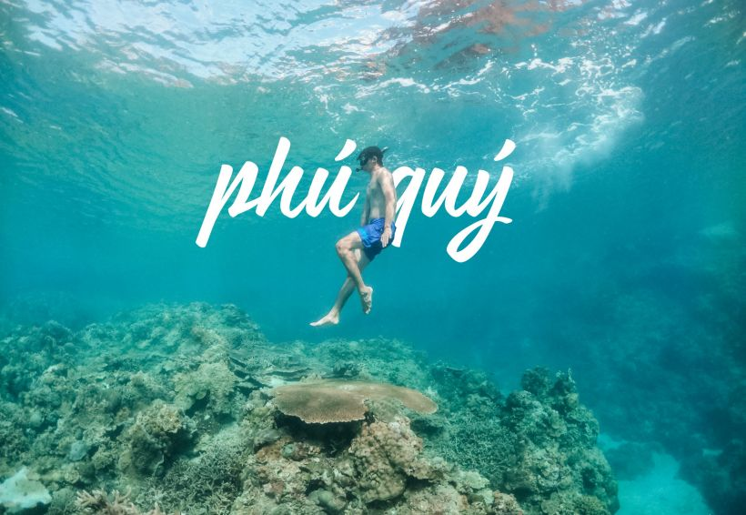
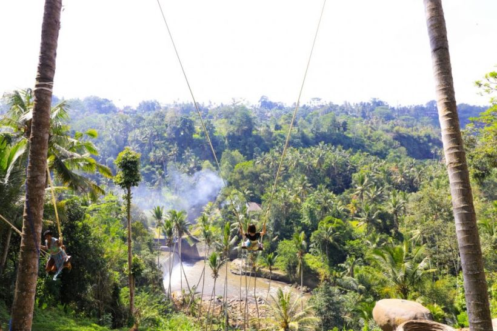

Kinh nghiệm khi đi du lịch.
Tập hợp những kinh nghiệp du lịch bụi sẽ giúp bạn tìm hiểu những cung
đường, điểm đến, nơi ăn, chổ ngủ tiện lợi

Đôi điều trước khi bạn đọc bài du lịch Phú Quý: Mình khá may mắn đi được
kha khá đảo ở Việt Nam toàn là từ lúc chưa phát triển du lịch. Dân ở đảo
đa số dân địa phương chứ không phải người tứ xứ tới làm ăn, nên họ rất
hiền. Phú Quý lúc mình đi cũng vậy, phải nói lâu lắm rồi mới đi ra 1 hòn
đảo cho mình cái cảm giác như đang đi thời 2013. Mọi thứ rất dễ thương
từ anh chị bán nước mía đối diện khách sạn mình ở, cho đến nhân viên ở
những quán ăn lớn lâu năm.
Cảnh vật thiên nhiên mọi thứ vẫn còn hoang sơ chưa bị “làm tiền hóa”. Vì
thế mình chỉ hy vọng sau này Phú Quý vẫn phát triển, nhưng phát triển
bền vững hơn và vẫn giữ được cái chất đó. Và đối với những bạn đi du
lịch mình cũng hy vọng ý thức hơn trong việc giữ gìn hòn đảo này không
bị “rác hóa”.
ĐI DU LỊCH PHÚ QUÝ DỄ KHÔNG?
Dễ siêu dễ, không có gì khó hết trơn. Nếu như cách đây khoảng 2,3 năm
thì việc đi Phú Quý khá khó khăn. Bạn phải ngồi trên tàu đánh cá 5 tiếng
mới ra tới đảo, còn bây giờ thì dễ hơn nhiều. Mình sẽ lấy điểm xuất phát
từ Sài Gòn sau đó các bạn có thể đi xe Phương Trang chuyến tối, sáng sớm
sẽ tới Phú Quý.Ăn sáng cafe tầm trưa hoặc bạn có thể mua vé tàu ra đảo
buổi sáng cũng được.
Về giớ tàu chạy thì không cố định mà thay đổi theo ngày, vì thế tốt nhất
bạn nên lên website Supperdong để đặt vé chọn giờ cho phù hợp với lịch
trình của mình. Tàu chạy từ cảng Phan Thiết ra Phú Quy tầm 2 tiếng 30
phút nếu thời tiết đẹp biển êm, còn đi vào tháng sóng lớn thì có thể lâu
hơn.
ĐI DU LỊCH ĐẢO PHÚ QUÝ THÁNG NÀO?
Thời gian đi du lịch Phú Quý tốt nhất đẹp nhất rơi vào đầu tháng 3 đến
cuối tháng 5 M LỊCH (Lưu ý âm lịch nha các bạn), còn từ tháng 6- 9 biển
bắt đầu có gió và thời tiết khá thất thường. Nếu như đi dịp này bạn nên
check kỹ thời tiết nhé, và xác định đi gặp gió lớn ngồi trên tàu từ Phan
Thiết ra Phú Quý là say mệt nghỉ luôn, mình nghe nói sóng rất lớn, nhiều
khi sóng đánh tới cả cửa sổ của tàu luôn.
ĂN GÌ Ở ĐÂU KHI ĐI DU LỊCH PHÚ QUÝ
Về căn bản thì dịch vụ lưu trú ở Phú Quý đang trên đà phát triển thêm,
tuy nhiên vẫn khá khó khăn trong việc đặt phòng trên các trang booking.
Đợt rồi mình đi thì mình ở khách sạn Hưng Phát (Sdt 0933009927) giá rơi
vào tầm 250k-350k các bạn nên gọi điện để check giá và đặt phòng trước.
Về vấn đề ăn uống bạn sẽ không thể bỏ qua những món hải sản đặc biệt
nhưng món gọi là “nếu chưa ăn thì chưa đi du lịch Phú Quý” đó là cua
huỳnh đế và tôm hùm. 2 quán khá nổi tiếng dành cho khách du lịch đó là:
Cột Buồm, Hải Thắm.Ngoài ra mình rất thích ăn món hàu đá ở đây, con hàu
to, thịt dòn thơm không giống như hàu bình thường mình ăn.
Đặc biệt có 2 món mình được người dân địa phương giới thiệu đó là cá nóc
xào sả ớt ( món này được bán tại quán Ông Già, các bạn search tên quán
trên google map để đi nhé, tại đường đi khá khó), món tiếp theo là bò
nóng ( quán bán món này nổi tiếng là Hòa Thướng ). Tới nơi bạn sẽ gọi bò
theo gram và người ta mang cho bạn 1 miếng bò chưa chín, việc của bạn là
tự chế biến theo những món mà bạn thích, đương nhiên họ chuẩn bị đầy đủ
đồ và gia vị cho bạn tự xử

Để du lịch Đài Loan trọn vẹn cần chuẩn bị gì là câu hỏi mà Cuongchan
nhận được nhiều nhất trong thời gian qua. Để hành trình khám phá xứ Đài
thuận lợi, ý nghĩa, mời bạn tham khảo các bí kíp mà mình tích lũy được
trong quá trình khám phá Đài Loan.
Lên lịch trình du lịch Đài Loan
Lịch trình không đơn giản là những gạch đầu dòng mà bạn cần soạn ra một
cách chi tiết, rõ ràng nhất. Nhìn vào lịch trình này, bạn biết được
chuyến đi của mình sẽ bắt đầu từ đâu, làm gì, ăn món gì và gặp ai, vào
thời gian nào,…
Nghe có vẻ không cần thiết nhưng lịch trình được xem là “Kim chỉ nam”,
giúp bạn có chuyến đi thuận lợi, dễ dàng và tiết kiệm. Tránh bỏ sót
những điểm đến xinh đẹp hay bỏ lỡ cơ hội khám phá các món ăn đặc sắc ở
xứ Đài.
Ngoài kế hoạch chuyến đi nộp cho Đại sứ quán khi xin visa Đài Loan. Bạn
có thể chuẩn bị một lịch trình khác phù hợp với tình trạng tài chính, sở
thích của mình và mang theo khi nhập cảnh Đài Loan.
Book vé máy bay và đặt phòng khách sạn
Ngay khi lên kế hoạch du lịch Đài Loan, bạn nên đặt vé máy bay càng sớm
càng tốt. Bởi đặt vé càng sớm thì có cơ hội săn vé khuyến mãi càng cao.
Thời gian lý tưởng nhất để book vé máy bay là 1 tháng trước ngày khởi
hành.
Ngoài ra, để dễ dàng chọn lựa khách sạn ưng ý, có chế độ ưu đãi hấp dẫn,
bạn nên đặt phòng khách sạn sớm trước ngày khởi hành ít nhất 1 tháng.
Bạn có thể lựa chọn Booking.com để đặt phòng bởi trang web này có chính
sách hủy phòng miễn phí.
Chuẩn bị hành lý và các vật dụng cần thiết
Hành lý mang theo khi du lịch Đài Loan nên gọn gàng, càng nhẹ càng tốt.
Tùy vào từng thời điểm, bạn hãy lựa chọn trang phục sao cho phù hợp. Đặc
biệt, trong hành lý bạn nhớ chuẩn bị một số loại thuốc cần thiết như cảm
sốt, thuốc đau đầu, thuốc chống côn trùng, dầu gội, sữa tắm, bàn chải,…
Lưu ý với những tín đồ “sống ảo”, bạn nhớ mang theo cục xạc dự phòng,
cục phát wifi và gậy selfie,… để lưu lại những khoảnh khắc đẹp!
Như vậy bạn đã có những bí kíp quan trọng để du lịch Đài Loan trọn vẹn
rồi nhé.
Trên đây là một vài bí kíp để du lịch Đài Loan trọn vẹn. Nếu còn thắc
mắc gì, bạn hãy liên hệ Cuongchan để được chúng tôi giải đáp chi tiết.
Trên đây là một vài thứ cần chuẩn bị trước chuyến đi Đài Loan, bạn nên
ghi nhớ để có chuyến du lịch hoàn hảo nhất. Chúc bạn có một hành trình
khám phá Đài Loan vui vẻ, ý nghĩa bên người thân, bạn bè!

Du lịch Bali thời gian gần đây được rất nhiều những người Việt Nam chú ý
đến vì dễ đi. Bài viết này chia sẻ kinh nghiệm du lịch Bali nó sẽ không
chỉ chi tiết từng khách sạn và từng món ăn, giá cả chi tiết. Chỉ đơn
thuần là những gì mà Tuân đã đi rồi và muốn đưa lên đây nếu bạn muốn
tham khảo cho chuyến đi của mình.
Bali rất phát triển du lịch, dịch vụ ăn uống khách sạn nhiều vô kể không
thể gợi ý chính xác được. Các bạn nên dùng các công cụ booking để tìm
phòng ưng ý (booking.com, airbnb.com, traveloka.com..) . Để kiếm quán ăn
nhà hàng thì dùng tripadvisor.com xem xung quanh mình có quán nào ngon
hay không.
Thông thường mọi người đi du lịch Bali tầm khoảng 5 ngày, nhưng nếu được
đi lại thì mình sẽ đi 15 ngày cho đã. Vì có quá nhiều chỗ chơi ngoài
những nơi quá nổi tiếng, nếu bạn google cái là ra liền. Trong bài này
thì có những cái chưa phổ biến lắm nhưng lại rất hay các bạn có thể tham
khảo.
Copyright © 2021. Designed and Deverloped by KHOA